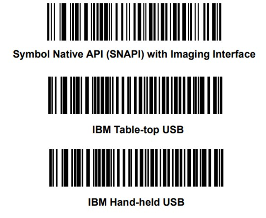

Overview
The Zebra IoT Connector is a utility that will log scanner related events to an endpoint such as a command prompt or terminal window, and/or text file, HTTP instance or Windows Event log. The events that can be logged through the IoT Connector are defined in the file IoTConnector-Config.xml and their properties can be changed depending on need. The IoT Connector accesses scanner devices through the Zebra CoreScanner Service for Windows or Linux which must first be installed and running.
- The IoT Connector allows a 3rd party management console, like Microsoft's SCCM, to track scanner information including the scanner's health by parsing a IoT Connector generated log file.
- The IoT Connector will output log entries to a sink (endpoint) as defined in its IoTConnector-Config.xml file.
-
The IoT Connector is configurable and can document one or all of the following information:
- Asset information
- Statistics (for example, battery charge level or number of UPCs scanned)
- Firmware update failures and/or firmware update success
- Configuration changes by tracking parameter 616 (Configuration Name change to "Modified")
- Scanned barcode data (all scanned items)
- Scan avoidance events from for MP7000
- The IoT Connector can have its output stored locally on its host PC or output to a network shared folder, HTTP instance or Windows Event log.
Supported Windows Operating Systems
IoT Connector for Windows support the following Windows versions.
- Windows 11 64bit
- Windows 10 32bit
- Windows 10 64bit
Supported Linux Distributions
IoT Connector for Linux is now capable of running in both C++11 and C++98 environments.
Complete supported Linux distributions list is available here.
Supported Devices
For the compatible devices list, please visit following pages.
For Windows, https://www.zebra.com/us/en/support-downloads/software/scanner-software/scanner-sdk-for-windows.html
For Linux, https://www.zebra.com/ap/en/support-downloads/software/scanner-software/scanner-sdk-for-linux.html
Prerequisites
The Zebra CoreScanner Driver for Windows or Linux is required, depending on your operating system.
Supported COM Protocols
IoT connector supported communication protocols include:
Table 1: Supported COM Protocol
| COM Protocol | Windows | Linux |
|---|---|---|
| IBM Table-Top USB | X | X |
| IBM Hand-Held USB | X | X |
| IBM OPOS - IBM Hand-held USB with Full Scan Disable | X | X |
| USB HID Keyboard Emulation | X** | X** |
| USB CDC Host | ||
| Symbol Native API (SNAPI) with Imaging Interface | X | X |
| Symbol Native API (SNAPI) without Imaging Interface | X | |
| Wincor-Nixdorf RS-232 Mode B | ||
| Simple Serial Interface (SSI) over RS232 | X* | X* |
| Simple Serial Interface (SSI) over Bluetooth Classic | X | |
| Simple Serial Interface (SSI) over Bluetooth Low-Energy (BLE) | ||
| Simple Serial Interface (SSI) over MFI |
NOTES:
* Requires CoreScanner configuration for Windows.
** If your application requires data in HIDKB format, enable the Simulated HID Keyboard Output feature in Zebra CoreScanner for Windows or Linux.
Simulated HID Keyboard Output allows scanners in USB-SNAPI, USB-IBM Table-top, USB-IBM Handheld, USB-OPOS or SSI mode to emulate HID Keyboard keystrokes to a host system. It sends the content of the scanned barcode as HID Keyboard keystrokes thus emulating USB-HIDKB scanner mode while continuing to operate in a bi-directional protocol needed to support the IoT Connector.
How to configure your scanner to operate with IoT Connector
Connect a Zebra USB scanner(s) to the computer and put the scanner into USB IBM Handheld or IBM TableTop or USB SNAPI mode by scanning one of the bar codes below.

Figure 1: Scanner Communication Over USBFor Zebra Cordless direct Bluetooth connection Refer to the article Pairing Cordless Scanner to Windows 10 with Scan-to-Connect Utility.
How to Configure IoT Connector
IoTConnector-Config.xml file is used by the IoT Connector to configure the logging formats and what to log.
XML File
<!-- Filename: IoTConnector-Config.xml -->
<!-- Refer to https://techdocs.zebra.com/dcs/scanners/iot-connector/about/ for IoT Connector info -->
<config name="IoT Connector">
<settings>
<spd_log>
<!-- Sinks section - define output target(s) of IoT Connector -->
<!-- Multiple sink types are supported. Refer to https://github.com/gabime/spdlog/wiki/4.-Sinks -->
<sinks>
<!-- rotating_file_sink_mt: When the max file size is reached, close the file, rename it and create a new file. Both max file size and max number of files are configurable. -->
<sink type="rotating_file_sink_mt" name="rotating_file_sink_mt">
<!-- Name of the Log file. %h - Host name , %H - Host ID (Physical address of the first MAC), %u - User name without domain (Ex. AAA), %U - User name with domain (Ex. AAA@zebra.com. Domain in @ format) and %Q-<VariableName>% - VariableName is any system/user environmental variable -->
<property key="log_file_name" value="iotConnector-%h.log" />
<!-- Path where the log files will be saved. The path must be accessible for the IoT Connector to create the logs. -->
<!-- log_file_path can be a network location as well. Eg for Windows systems: value="\\10.100.100.10\Temp\iotConnector-logs" . For Linux systems, first mount the shared folder to current system. Then give the path of that location on the current system -->
<property key="log_file_path" value="logs" />
<!-- Max file size in Kilo Bytes (considering 1KB = 1024B). Minimum size is 5KB and if any value less is defined, will be defaulted to the minimum value. -->
<property key="max_file_size" value="5120" />
<!-- Max file count. The minimum is 1 and anything less or invalid value will be defaulted to 1. -->
<property key="max_file_count" value="5" />
<!-- Pattern of a single log entry. Please refer to https://github.com/gabime/spdlog/wiki/3.-Custom-formatting for more information. -->
<!-- To add host info into a log entry. %J - Host name , %K - Host ID (Physical address of the first MAC), %U - User name without domain, %V - User name with domain. and %Q-<VariableName>% - VariableName is any system/user environmental variable -->
<property key="log_pattern" value="[%Y-%m-%d %H:%M:%S] [%J] %v" />
<!-- Log level to be recorded. 2 = INFO, 3 = WARNING, 4 = ERROR, 5 = CRITICAL 6 = LOG_OFF, 0,1 = TRACE,DEBUG (Works only with debug build) -->
<property key="log_level" value="2" />
</sink>
<!-- Sink defined to produce screen output with -s command line switch -->
<sink type="stdout_color_sink_mt" name="stdout_color_sink_mt">
<property key="log_pattern" value="[%Y-%m-%d %H:%M:%S] %v" />
<property key="log_level" value="2" />
</sink>
<!-- http_sink_mt: Sink will log everything to a defined HTTP/HTTPS end point -->
<?ignore
<sink type="http_sink_mt" name="http_sink_mt">
<!-- URL of the server instance -->
<property key="url" value="server_url" />
<!-- HTTP headers for the request. Use semicolon(;) to separate multiple headers. Eg : header1;header2 -->
<property key="request_header" value="request_headers" />
<!-- Set the value to "true" to enable the batch mode. You can set the logging time interval and/or number of log entries(batch size) per batch -->
<property key="batch_mode" value="false" />
<!-- Number of logs per batch -->
<property key="batch_size" value="0" />
<!-- Time interval in seconds. Eg: 20.0 -->
<property key="logging_interval" value="0.0" />
<!-- Add strings that contain in logs to be send as soon as they happen. Use comma(,) to separate multiple entries. Eg : "EVENT:DEVICE ATTACHED,EVENT:DEVICE DETACHED" -->
<property key="real_time_log_filter" value="" />
<!-- Set the value to true to get HTTP request/response information in a file named "logs/iotConnector-verbose.log"-->
<property key="verbose_mode" value="true" />
<property key="log_pattern" value='{"event":{"time": "%Y-%m-%d %H:%M:%S", "level": "%^%l%$", "hostname": "%J", "message": "%v"}}' />
<property key="log_level" value="2" />
</sink>
?>
<!-- win_eventlog_sink_mt: Sink will log everything to Windows Event Viewer -->
<!-- Run windows-event-log.bat file with administrator rights once before enabling this sink -->
<?ignore
<sink type="win_eventlog_sink_mt" name="win_eventlog_sink_mt">
<property key="log_pattern" value="[%Y-%m-%d %H:%M:%S] %v" />
<property key="log_level" value="2" />
</sink>
?>
</sinks>
</spd_log>
<!-- Log Elements section - enable/disable and configure data content to be logged -->
<!-- Multiple log-elements for sinks may be defined below. Eg: get-statistics, check-health, on-agent-startup, etc -->
<log-elements>
<!-- Configure get-statistics entries - intended for collection of scanner data -->
<get-statistics enabled="true">
<!-- Regular expression wildcards for model and serial may be defined -->
<!-- Refer to https://www.freeformatter.com/cron-expression-generator-quartz.html for the schedule pattern -->
<!-- The schedule on the following line gets statistics daily at 2am -->
<group model=".*" serial=".*" schedule="0 2 0 * * *">
<!-- Scanner-attribute-ids will be queried from the scanner and their values will be logged. Multiple attributes separated by commas may be listed -->
<scanner-attribute-ids>15015</scanner-attribute-ids>
</group>
</get-statistics>
<!-- Configure check-health entries - intended to periodically confirm scanner availability -->
<!-- The schedule below checks health every 30 minutes -->
<check-health enabled="true">
<group model=".*" serial=".*" schedule="0 0/30 * * * *">
<scanner-attribute-ids>15015</scanner-attribute-ids>
</group>
</check-health>
<!-- Configure an on-agent-startup entry -->
<on-agent-start-up enabled="true">
<group model=".*" serial=".*">
<scanner-attribute-ids>15015</scanner-attribute-ids>
</group>
</on-agent-start-up>
<!-- Enable/disable on-system-shutdown entry -->
<on-system-shutdown enabled="true" />
<!-- Configure entries for scanner device attach -->
<on-attach enabled="true">
<group model=".*" serial=".*">
<scanner-attribute-ids>534,533</scanner-attribute-ids>
</group>
</on-attach>
<!-- Enable/disable entry for scanner device detach -->
<on-detach enabled="true" />
<!-- Used to enable/disable log entries on barcode events -->
<!-- Non printable characters in the barcode will be replaced by "_"(ASCII 0x5F) -->
<on-barcode enabled="false" />
<!-- Used to enable/disable log entries on firmware download events -->
<on-firmware-download-start enabled="false" />
<on-firmware-download-progress enabled="false" />
<on-firmware-download-end enabled="false" />
<on-firmware-download-error enabled="true" />
<!-- on-config-name-change is used to enable/disable log entries when a config name change occurs. This will be logged using the same schedule as check-health -->
<!-- The timeout value specifies the time to wait before logging a config change -->
<!-- The max timeout value is 60000 milliseconds (60 seconds). -->
<on-config-name-change enabled="true" timeout="5000" />
<!-- on-non-decode-event is used to enable/disable log entries if MP7xxx is enabled for non decode events -->
<on-non-decode-event enabled="false"/>
<!-- Configure RTA events - intended for collection of scanner real time alerts-->
<on-real-time-alerts enabled="false"/>
</log-elements>
</settings>
</config>
Real Time Alerts (RTA)
Real Time Alerts (RTA) are predefined events that are monitored by devices with RTA support. When a selected statistic changes its value or when a selected event occurs, it is then reported by the device to the host as an event which is logged.
When a device is registered for RTA events, the logging of RTA Alerts can be configured to be enabled or disabled via the IoTConnector-Config.xml file.
For more information regarding RTA, see Real Time Alerts (RTA) User Guide.
Wildcard Support in Config XML
Table 2: List of Wildcards
| Filtering Options | Outcome | |
|---|---|---|
| Model | Serial | |
| * | .* | None of the scanners will get listed. The message, "Model number or the Serial number is not a valid expression in the configuration for this element." will be displayed. |
| .* | .* | All the scanners will get listed. |
| . | .* | None of the scanners will get listed. The message, "Model number or the Serial number is not a valid expression in the configuration for this element." will be displayed. |
| DS* | .* | DS scanners with any serial number will be displayed. |
| DS | 51* | None of the scanners will get listed. The message, "Model number or the Serial number is not a valid expression in the configuration for this element.", will be displayed. |
| DS8178-SR00006ZZWW | .* | The scanners, whose model number is exactly equivalent to DS8178-SR00006ZZWW will be listed. |
| .* | 182825223080822 | The scanners with that exact serial number will get listed. |
| .* | 18282522 | The scanners with the exact serial number '18282522' will be listed. If not nothing will be listed in its place. |
| .* | 18282522* | The scanners with serial numbers beginning with 18282522 will be listed. |
| DS* | 51* | All the DS scanners with serial numbers starting with 51* will be listed. |
Tag Description
Table 3: XML Tags Description
| XML Tag | Description |
|---|---|
| spd_log |
Contains spd log configurations. This can be used to customize the log pattern, log file name, log file path, maximum log files count and maximum log file size. Log file path can be given a network location to save log files.
NOTE: On Linux systems, first mount the shared folder on the host PC. Then specify the path of that location. Log file name can be customized to have system information when combined with the following options,
Eg: The log pattern can be customized and support custom flags.
More sinks can be defined as per the need. Refer spd log documentation for more information on this area. https://github.com/gabime/spdlog |
| log-elements |
This describe the elements to log. The supported sub tags are,
All these log elements can either be enabled or disabled using the attribute “enabled” in the tag. NOTE: For a list of a scanner's supported attribute (parameter) numbers and definitions, refer to the Product Reference Guide for that model scanner, available from the Zebra Support website at https://www.zebra.com/support. Attributes include configuration parameters, monitored data, and asset tracking information. References |
| get-statistics | This contains options for statistics logging. The supported sub-tags are group tags. |
| check-health | This contains options for device health logging. The supported sub-tags are group tags. |
| on-agent-start-up | Occurs when the IoT Connector is restarted. |
| on-agent-shutdown | Occurs when the IoT Connector is shutdown or when a system reboot is requested. |
| on-attach | Occurs when a device is attached to the system. |
| on-detach | Occurs when a device is detached from the system. |
| on-barcode | Occurs on a barcode read. |
| on-firmware-download-start | Occurs on a firmware download start event. |
| on-firmware-download-progress | Occurs when a firmware download is in progress. |
| on-firmware-download-end | Occurs on a successful firmware download end event. |
| on-firmware-download-error | Occurs on a firmware download error event. |
| on-config-name-change | Occurs on a Configuration Name change event when used in conjunction with check-health. |
| on-non-decode-event | Occurs when a MP7xxx is enabled for non-decode events. |
| on-real-time-alerts | Occurs when real time alerts are enabled in the connected device |
| group |
The group tag is used to define a filter for scanners and to set up interval of occurrence. The supported attributes are,
A group may contain additional scanner-attribute-ids tag to include additional data in the log file. |
Configure the http sink
To enable the http sink on IoT Connector, enable the sink in the configuration file. By default, the http sink is disabled (commented out) and needs to be enabled. To enable, remove the “<?ignore” and the “?>” lines around the http_sink_mt section in the config file. Then add the relevant server url and the http headers in the appropriate sections. Multiple headers have to be separated by semicolons(“;”).
Example http headers for Splunk servers:
"Authorization: Splunk xxxxxxxxx-xxxx-xxxx-xxxxx-xxxxxxxxxxxx;X-Splunk-Request-Channel: xxxxxxx-xxxx-xxxxx-xxxxx-xxxxxxxxxxxxx"
Example http headers for Savanna servers:
"apikey: xxxxxxxxxxxxxxxxxxxxxxxxxxxxxxx;Content-Type: application/json"
The log pattern needs to be configured to represent a JSON data object and it’s configurable to the client requirement. The default log pattern is configured for Splunk servers. The log pattern for Savanna servers is not configurable and needs to follow either of the below formats.
Predefined log pattern 1:
'{"time": "%Y-%m-%d %H:%M:%S", "level": "%^%l%$", "hostname": "%J", "message": "%v"}'
Predefined log pattern 2:
'{"time": "%Y-%m-%d %H:%M:%S", "level": "%^%l%$", "hostname": "%J", "message": "%v", "user-data" : "User Data"}'
Apart from real time logging, http_sink supports batch logging. This means the http_sink can be configured to send data in bulks instead of real time.This helps to control network congestion. This mode is disabled by default and has to be enabled.Then a user can specify the number of log entries per batch or/and logging time interval. Beside these two, this mode allows to send logs in real time upon the criticality.
A user can includes sub-strings of the logs that have to be sent in real time in the real_time_log_filter property. Multiple entries have to be separated by commas(,).
Eg: “EVENT:DEVICE ATTACHED,EVENT:DEVICE DETACHED”
The http_sink creates a verbose log file named iotConnector-verbose.log that contains all the HTTP requests and responses information of messages sent by the http_sink. This is enabled by default and you can disable this feature by changing the value of verbose_mode property to false.
Configure the Windows Event log sink (Windows)
By default this sink is also disabled. To enable this, remove the “<?ignore” and the “?>” lines around the win_eventlog_sink_mt in the config file. Then run the windows-event-log.bat file that in the same folder with other executables.
Run the IoT Connector
Run as a background process (Windows).
- Double-click "IoTConnector.exe" or
- Run on the command prompt without any parameters. Eg: Path\to\the\executable>IoTConnector.exe)
Run as an application via the command prompt (Windows).
-
Run on the command prompt as,
- Path\to\the\executable > IoTConnector.exe --show, OR
- Path\to\the\executable > IoTConnector.exe -s
- Please note that double-dash in first case, and single-dash in the second case.
- To display the help test run the executable with "--help" or "-h"
Configure IoT Connector to run in Windows Startup.
IoT Connector can be configured to run automatically at startup in Windows by running the application with option 'i' on the command prompt.
Path\to\the\executable > IoTConnector.exe -i
To remove the IoT Connector from startup programs run the application with option '-u'
Path\to\the\executable > IoTConnector.exe -u
NOTE: Please note that the feature with which the IoT Connector can be automatically started at system reboot is not supported in Linux platforms. If the user wishes to have the same functionality in Linux , use of Cron Jobs is recommended.
Run as a daemon in the background (Linux).
- Open a terminal and go to the directory where you extracted iot-connector files.
- Run "sudo ./IoTConnector". ( before that you may need to run "sudo chmod a+x IoTConnector")
Run as an application in the foreground (Linux).
- Open a terminal and go to the directory where you extracted iot-connector files.
- Run "sudo ./IoTConnector -s" or "sudo ./IoTConnector --show". (before that you may need to run "sudo chmod a+x IoTConnector")
- To display the help test run the executable with "-h" or "--help"
NOTE: Please note that single-dash in the first case, and double-dash in the second case.
Running IoT Connector on Linux.
The library "libcurl" is required in Linux distributions for IoT Connector to be executed properly and especially when communicating with the Splunk server. For Ubuntu versions, this can be installed with the following commands.
sudo apt-get update -y
sudo apt-get install -y libcurl4-nss-dev
For rpm distributions such as Fedora, available packages can be found with the command given below.
sudo dnf search libcurl
List of packages available will be displayed on the terminal after execution of the above command. The appropriate package for the platform can be downloaded with the command provided below. Please pay proper attention to the installation bit version (32bit / 64bit).
sudo dnf install <package-name>
IoT Connector has to be run with root privileges in Linux systems. Hence the environment variables have to be saved in a location where it is accessible for the root user at all times (Permanent System-wide). The specified file is the '/etc/environment'. The system-wide variable can be entered as follows.
For example, to make our MY_NAME environment variable permanent for the entire system, follow this process:
- Change directory to '/etc'
- Open environment file in a text editor (e.g. nano, vi, vim, etc.)
-
Add the following line to the bottom of the file.
MY_NAME = "Mark Williams" - Save the changes.
After saving the entry, it is required to source the /etc/environment file for the system to be aware of the change. One can choose to do system reboot to achieve the same as well. The reason for this is, in certain rpm distributions a system reboot is required after the very first environment variable update. Hence it is recommended to do a trial environment variable change before deploying IoT Connector in the production environment. Note that there is a very minor chance of this occurrence.
source /etc/environment
After this step, the added environment variable is considered as a permanent variable of the system. And this can be checked with the usual Linux command given below.
printenv
The user may update the environment variable value while IoT Connector is running in the background. The change will be reflected in the log entries and the log file, provided "inotify" tool is already installed in the system. "inotify" was merged into the Linux kernel mainline in kernel version 2.6.13. In the event it is not already installed, one can always install the latest version from the software center of the corresponding Linux distribution.
It is required to have network and wireless tools installed prior to running IoTConnector. For Debian distributions following commands accomplish the above.
sudo apt-get install net-tools
sudo apt-get install wireless-tools
For rpm distributions, the below given commands can be used.
sudo yum install net-tools
sudo yum install wireless-tools
To be able to generate UUID s in Debian distributions, following command has to be executed.
sudo apt-get install uuid-runtime
The command to follow in rpm distributions is given below.
sudo snap install uuid-tool
Log Files
The log files created by the IoT Connector will be written to the path specified in the configuration xml in as a text file. If the application is run with the user command prompt displayed, the logs will be printed to the command prompt as well.
If needed more sinks can be defined in the configuration xml file, to write logs to more locations.
Version History
Version 1.0.23.0 - 07/2025
- Enhanced the bootup process by no longer displaying the console window (black window displaying a command prompt) when IoT Connector is launched using silent mode on Windows 11.
Version 1.0.20.0 - 07/2024
- Added scanner logging information - host mode information is now logged when a scanner is detached from a host, in addition to the previously logged information.
Version 1.0.19.0 - 01/2024
- Added support for logging of environment variables (pulled from operating system) into the URL and request headers in the HTTP sink. Note the environmental variable check is performed real-time on each logging occurrence.
- Security fix - Updated library “libcurl” used in IoT Connector from v7.78.0 to v8.4.0 to resolve security vulnerabilities.
Version 1.0.18.0 - 01/2023
- Added VIQ (Visibility IQ) endpoint support.
- Added 5 new events as JSON formatted log entries for DEVICE ATTACHED, DEVICE DETACHED, STATISTICS, BARCODE and BATTERY Events.
- Added ability to remove displaying empty curly brackets ({}) when no data is available for JSON formatted log messages.
- Bug fix - The network location can be specified as a log file path.
- Bug fix - Fixed intermittent crash on IoT Connector when multiple devices are used, AND network connection is disconnected.
Version 1.0.10.0 - 01/2022
- Logging Agent renamed “IoT Connector”.
Version 1.0.8.0 - 10/2021
- Added support for logging of operating system environment variables like “host PC name”. The environmental variable check is performed real-time on each logging occurrence.
- Added support for real-time logging via a JSON call to cloud-based consoles like Splunk.
Version 1.0.4.0 - 01/2021
- Logging Agent bundled with Windows SDK.
- Log agent can now retrieve Host/PC name and IP address.
- “Scan Avoidance” functionality renamed to “Non-Decode Event”.
- The reporting interval can be customized. Set unique programming interval by attribute. Note a small interval (less than 30 seconds) may impact POS system performance.
Version 1.0.3.0 - 07/2020 (Initial Version)
- Logging Agent bundled with Windows SDK.
Version 1.0.15-0 - 10/2024
- Added support for IoTC restart upon CoreScanner restart.
Version 1.0.13-0 - 07/2024
- Added scanner host mode to logging notifications when scanners are detached from host.
Version 1.0.12-0 - 01/2024
- IoT Connector (IoTC)- Added support for logging of environment variables (pulled from operating system) into the URL and request headers in the HTTP sink. Note the environmental variable check is performed real-time on each logging occurrence.
Version 1.0.8-0 - 01/2023
- Enhanced IoT Connector - Added support for C98. Note C98 is a C++ compilation standard.
-
Added IoT connector support for following distributions.
- RedHat 7.4 64bit
- CentOS 7.9 64bit
- Ubuntu 14.04 64bit
Version 1.0.7-0 - 04/2022
- Enhanced IoT Connector capabilities - Added support for logging scanner details where Global Unique Identifier (GUID) is invalid.
Version 1.0.4-0 - 01/2022
- Logging Agent renamed “IoT Connector”.
Version 1.0.3-0 - 10/2021
- Enhanced Logging Agent capabilities
- Added support for logging of operating system environment variables like “host PC name”. The environmental variable check is performed real time on each logging occurrence.
- Added support for real time logging via a JSON call to cloud-based consoles like Splunk.
Version 1.0.2-0 - 07/2020 (Initial Version)
-
Logging Agent bundled with Linux SDK.
- The Logging Agent allows a 3rd party management console to track scanner information including the scanner's health by parsing a Logging Agent generated log file.
- The Logging Agent is configurable for example it can be output for all devices (1,000s of log files) or just devices that meet a specific condition like failed a firmware update (a few log files).
-
The Logging Agent can document the following information:
- Asset information.
- Statistics for example battery charge level or UPCs scanned.
- Firmware failures and or firmware success.
- Parameter value(s) changed. Achieved by tracking parameter 616 (config file name changed to “Modified”).